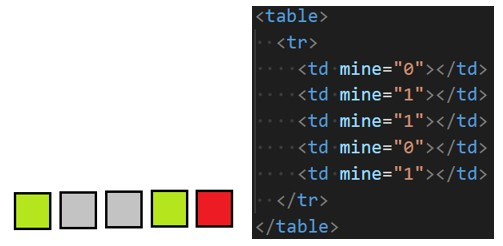

Задача 18
Умова. Однорядковий сапер. Однорядкова таблиця, до клітинок якої додано інформацію про наявність міни (використати атрибути). Спочатку клітинки сірі. При натисненні на клітинку аналізується чи є там міна і тоді колір стає червоним, якщо немає – зеленим. Додати можливість відкриття усіх сусідніх незамінованих клітинок при відкритті незамінованої клітинки.
